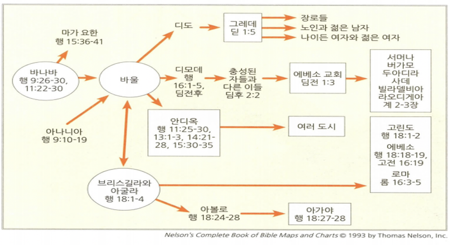

<!doctype html>
<html>
    <head>
        <meta charset="UTF-8">
        <meta name = "viewport" content = "width = device-width, initial-scale=1.0">
        <title>CF1 로마서</title>
        <link rel="stylesheet" type="text/css" href="../../../css/pages.css">
    </head>
</html>

<body>
    <header>
        <h3><a href = "../../../index.html">HAGUS <br> HARDWARE</a></h3> 
        <ul id="main_menu">
        </ul>

        <script src = "../../../MainMenu.js"></script>
    </header>

    <section class="section">
    <div id = "tag_menu">
    </div>

    <script src = "../../../TIL_tag_menu.js"></script>

    <div id = "tag_list">
        <div class="l_title"><a href = "../../../TIL.html">Class.</a></div><hr>
        <div class = "l_subtitle"><div class = "title"><a href = "../../../TIL.html"><strong>[CF1] 로마서</div><div id="date">2021.06.12</div></strong></a></div>
             <!--====content====-->
        <div class = "content"> 
<pre>
이신칭의와 성화
<span class = "h">개괄</span>
<strong>연대</strong> : 50년대 중반(아마도 56년경)
<strong>장소</strong> : 그리스 고린도 지역
<strong>수신</strong> : 로마에 있는 교인들 (로마인구 1백만, 유대인 5만명)
<strong>상황</strong> : 로마를 거쳐 스페인으로 가려던 바울의 계획
<strong>목적</strong> : 바울은 복음을 통해서 교회 안에 유대인 - 이방인 연합 추구
<strong>핵심 구절</strong>
내가 복음을 부끄러워하지 아니하노니 이 복음은 모든 믿는 자에게 구원을 주시는 하나님의 능력이 됨이라 먼저는 유대인에게요 그리고 헬라인에게로다.  복음에는 하나님의 의가 나타나서 믿음으로 믿음에 이르게 하나니 기록된 바 오직 의인은 믿음으로 말미암아 살리라 함과 같으니라(롬 1:16-17) 


<span class = "h">하나님 나라의 멘토링</span>



<span class ="h">로마서의 신학적 주제들</span>
1. 이신득의 Justification by Faith(롬 3:24-26)
2. 복음에 빚진 자 (롬1:14)(롬 15:16)
3. 그리스도인의 세례와 연합의 의미 (롬6:3)(롬6:4)
4. 하나님께 드려지는 의의 도구 (롬6:11-13)
5. 성숙(성화)을 위한 자아의 내적 투쟁 (롬7:21-23)


<span class ="h">양자됨 Adoption as God's sons</span>
[롬 8:14-16] “무릇 하나님의 영으로 인도함을 받는 사람은 곧 하나님의 아들이라. 너희는 다시 무서워하는 종의 영을 받지 아니하고 양자의 영을 받았으므로 우리가 아빠 아버지라고 부르짖느니라. 성령이 친히 우리의 영과 더불어 우리가 하나님의 자녀인 것을 증언하시나니.”


<span class ="h">이스라엘 민족을 위한 중보기도</span>
“형제들아 너희가 스스로 지혜 있다 하면서 이 신비를 너희가 모르기를 내가 원하지 아니하노니 이 신비는 이방인의 충만한 수가 들어오기까지 이스라엘의 더러는 우둔하게 된 것이라.” (롬 11:25)

1. 온 이스라엘(11:26) : 유대인, 이방인을 포함한 모든 구원 받은 성도
2. 교회가 보편적 개념이다.
3. 이스라엘은 특별한 역할이 있다. 


<span class ="h">구원의 사회적, 공동체적 특징</span>
롬12장1-3절: 산제사, 마음의 변화, 
롬13장: 권세 하에서 살아가기
롬14-15장: 서로 받아들이는 모습
롬16장: 바울의 동역자들, 후원자들 그룹


<span class ="h">구원의 사회적, 공동체적 특징</span>
1. 성도는 평화, 의, 기쁨을 누린다.
2. 성도는 아담의 원죄의 결과를  피할 수 있다.
3. 성도는 죄의 노예생활에서 해방된다.
4. 성도는 율법의 굴레에서 벗어난다.
5. 성령의 능력으로 의로운 삶을 산다.
6. 타락에 대한 완전한 승리를 이룬다.


<span class ="h">우리의 삶의 현장에 구원이 필요하다</span>
[롬 1:29] 곧 모든 불의, 추악, 탐욕, 악의가 가득한 자요 시기, 살인, 분쟁, 사기, 악독이 가득한 자요 수군수군하는 자요 

[롬 1:30] 비방하는 자요 하나님께서 미워하시는 자요 능욕하는 자요 교만한 자요 자랑하는 자요 악을 도모하는 자요 부모를 거역하는 자요 

[롬 1:31] 우매한 자요 배약하는 자요 무정한 자요 무자비한 자라 

[롬 1:32] 그들이 이같은 일을 행하는 자는 사형에 해당한다고 하나님께서 정하심을 알고도 자기들만 행할 뿐 아니라 또한 그런 일을 행하는 자들을 옳다 하느니라


</pre>  
    <br>
    <br>
    <br>
    </div> 

    </div>

</section>

    
</body>


